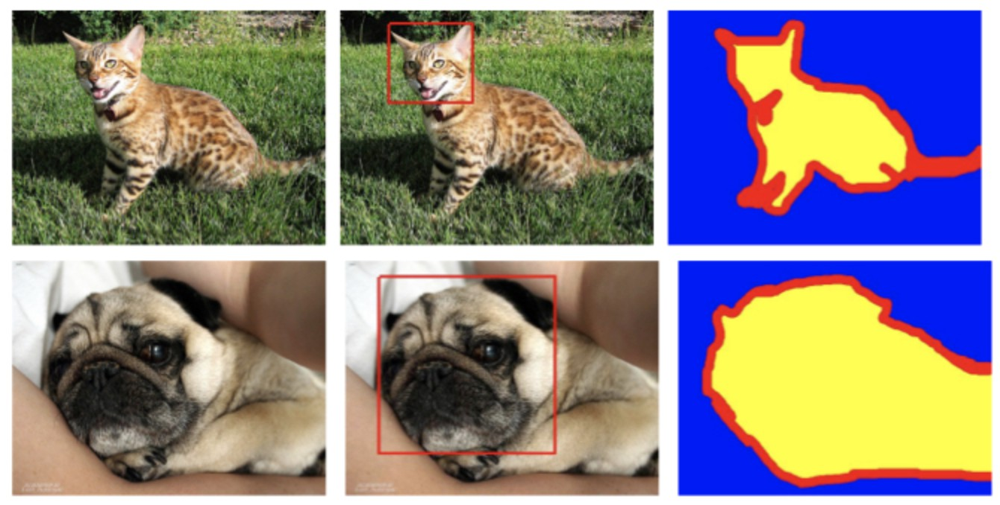

5.3 UNet案例¶
学习目标
- 了解宠物图像分割数据集
- 能够完成UNet网络的搭建
- 能够完成UNet网络的训练与预测
1.1 任务及数据集简介¶
使Oxford-IIIT Pet Dataset宠物图像分割数据集，包含37种宠物类别，其中有12种猫的类别和25种狗的类别，每个类别大约有200张图片，所有图像都具有品种，头部ROI和像素级分割的标注，如下图所示：

图像分割时共分为前景，背景和不确定3种，图像数据包含的类别及对应的数量如下图所示：
数据集的目录结果如下所示：\segdata
1、Images：存储数据集的图片数据，其中图片文件名是以大写开头为“cat”，小写开头为“dog”。
2、Annotations：标注信息，内容如下所示：
- list.txt中的内容格式如下所示，其中Class ID对应着37类中的某一类，SPECIES是总分类，1是猫，2是狗；BreedID是猫狗分类中的子分类，猫的子分类为12类，而狗的子分类为25类。
- trimaps是图像的像素级标注信息，是我们的目标值
接下来我们利用UNET网络进行宠物数据集分割。
1.2 数据集获取¶
在进行模型构建之前，我们将读取数据集，导入相应的工具包：
import os
from IPython.display import Image, display
from tensorflow.keras.preprocessing.image import load_img
import PIL
from PIL import ImageOps
1.2.1 路径及相关参数设置¶
在这里我们设置数据的路径，图像的大小，batch_size和类别数量，在这里使用了一个技巧，图像分割时共分为前景，背景和不确定3种，分别标注为：1，2，3，对类别进行热编码时，我们编码为：1：0010；2：0100；3：1000，这样在设置类别个数时设为4即可。
# 图片位置
input_dir = "segdata/images/"
# 标注信息位置
target_dir = "segdata/annotations/trimaps/"
# 图像大小设置及类别信息
img_size = (160, 160)
batch_size = 32
num_classes = 4
# 图像的路径
input_img_paths = sorted(
[
os.path.join(input_dir, fname)
for fname in os.listdir(input_dir)
if fname.endswith(".jpg")
]
)
# 目标值路径
target_img_paths = sorted(
[
os.path.join(target_dir, fname)
for fname in os.listdir(target_dir)
if fname.endswith(".png") and not fname.startswith(".")
]
)
1.2.2 数据展示¶
将图像及对应的结果进行展示：
# 显示一个图像
display(Image(filename=input_img_paths[10]))
标注信息中只有3个值，我们使用PIL.ImageOps.autocontrast进行展示，该方法计算输入图像的直方图，然后重新映射图像，最暗像素变为黑色，即0，最亮的变为白色，即255，其他的值以其他的灰度值进行显示，在这里前景，背景和不确定分别标注为：1，2，3，所以前景最小显示为黑色，不确定的区域最大显示为白色。
# 显示标注图像
img = PIL.ImageOps.autocontrast(load_img(target_img_paths[10]))
display(img)
1.2.3 构建数据集生成器¶
利用keras.utils.Sequence构建图像生成器来读取数据，每个Sequence必须实现 getitem 和 len 方法，通过 getitem 应返回完整的批次， Sequence是进行多处理的更安全方法。这种结构保证了网络在每个时间段的每个样本上只会训练一次。主要实现3个方法；init,len和getitem即可。
from tensorflow import keras
import numpy as np
from tensorflow.keras.preprocessing.image import load_img
# 数据集获取：
class OxfordPets(keras.utils.Sequence):
# 在__init__方法中指定batch_size,img_size,input_img_paths,target_img_paths
def __init__(self, batch_size, img_size, input_img_paths, target_img_paths):
self.batch_size = batch_size # 批量大小
self.img_size = img_size # 图像大小
self.input_img_paths = input_img_paths # 输入图像路径
self.target_img_paths = target_img_paths # 标注图像路径
def __len__(self):
# 计算迭代次数
return len(self.target_img_paths) // self.batch_size
def __getitem__(self, idx):
"""
获取每一个batch数据
"""
i = idx * self.batch_size
# 获取输入的图像数据
batch_input_img_paths = self.input_img_paths[i: i + self.batch_size]
# 获取标签数据
batch_target_img_paths = self.target_img_paths[i: i + self.batch_size]
# 构建特征值数据：获取图像数据中每个像素的数据存储在x中
x = np.zeros((batch_size,) + self.img_size + (3,), dtype="float32")
for j, path in enumerate(batch_input_img_paths):
img = load_img(path, target_size=self.img_size)
x[j] = img
# 构建目标值数据：获取标注图像中每个像素中的数据存在y中
y = np.zeros((batch_size,) + self.img_size + (1,), dtype="uint8")
for j, path in enumerate(batch_target_img_paths):
img = load_img(path, target_size=self.img_size,
color_mode="grayscale")
y[j] = np.expand_dims(img, 2)
return x, y
接下来，我们就可以使用该方法来获取数据。
1.3 模型构建¶
Unet的网络的结构如下图所示，主要分为两部分：编码和解码部分，我们分别进行构建
导入相关的工具包：
import tensorflow as tf
import tensorflow.keras as keras
from tensorflow.keras.layers import Input, Conv2D, Conv2DTranspose
from tensorflow.keras.layers import MaxPooling2D, Cropping2D, Concatenate
from tensorflow.keras.layers import Lambda, Activation, BatchNormalization, Dropout
from tensorflow.keras.models import Model
1.3.1 编码部分¶
编码部分的特点是：
- 架构中含有着一种重复结构，每次重复中都有2个 3 x 3卷积层、非线性ReLU层和一个 2 x 2 max pooling层（stride为2）。
-
每一次下采样后我们都把特征通道的数量加倍
-
每次重复都有两个输出：一个用于编码部分进行特征提取，一个用于解码部分的特征融合
构建的代码如下所示：
# 输入：输入张量，卷积核个数
def downsampling_block(input_tensor, filters):
# 输入层
x = Conv2D(filters, kernel_size=(3, 3),padding='same')(input_tensor)
# BN层
x = BatchNormalization()(x)
# 激活函数
x = Activation('relu')(x)
# 卷积层
x = Conv2D(filters, kernel_size=(3, 3),padding="same")(x)
# BN层
x = BatchNormalization()(x)
# 激活层
x = Activation('relu')(x)
# 返回的是池化后的值和激活未池化的值，激活后未池化的值用于解码部分特征级联
return MaxPooling2D(pool_size=(2, 2))(x), x
1.3.2 解码部分¶
解码部分也使用了重复模块：
- 每一个模块有两个输入：一个是编码阶段的特征图，一个是解码部分的特征图
- 每一步都首先使用反卷积(up-convolution)，每次使用反卷积都将特征通道数量减半，特征图大小加倍。（图中绿箭头）
- 反卷积过后，将反卷积的结果与编码部分中对应步骤的特征图拼接起来。（白/蓝块）
- 编码部分中的特征图尺寸稍大，将其修剪过后进行拼接。（左边深蓝虚线）
- 对拼接后的map再进行2次3 x 3的卷积。（右侧蓝箭头）
编码实现如下：
# 输入：输入张量，特征融合的张量，卷积核个数
def upsampling_block(input_tensor, skip_tensor, filters):
# 反卷积
x = Conv2DTranspose(filters, kernel_size=(2,2), strides=(2,2),padding="same")(input_tensor)
# 获取当前特征图的尺寸
_, x_height, x_width, _ = x.shape
# 获取要融合的特征图的尺寸
_, s_height, s_width, _ = skip_tensor.shape
# 获取特征图的大小差异
h_crop = s_height - x_height
w_crop = s_width - x_width
# 若特征图大小相同不进行裁剪
if h_crop == 0 and w_crop == 0:
y = skip_tensor
#若特征图大小不同，使级联时像素大小一致
else:
# 获取特征图裁剪后的特征图的大小
cropping = ((h_crop//2, h_crop - h_crop//2), (w_crop//2, w_crop - w_crop//2))
# 特征图裁剪
y = Cropping2D(cropping=cropping)(skip_tensor)
# 特征融合
x = Concatenate()([x, y])
# 卷积
x = Conv2D(filters, kernel_size=(3,3),padding="same")(x)
# BN层
x = BatchNormalization()(x)
# 激活层
x = Activation('relu')(x)
# 卷积层
x = Conv2D(filters, kernel_size=(3,3),padding="same")(x)
# BN层
x = BatchNormalization()(x)
# 激活层
x = Activation('relu')(x)
return x
1.3.3 模型构建¶
将编码部分和解码部分组合一起，就可构建unet网络，在这里unet网络的深度通过depth进行设置，并设置第一个编码模块的卷积核个数通过filter进行设置，通过以下模块将编码和解码部分进行组合：
# 使用3个深度构建unet网络
def unet(imagesize, classes, features=64, depth=3):
# 定义输入数据
inputs = keras.Input(shape=img_size + (3,))
x = inputs
# 用来存放进行特征融合的特征图
skips = []
# 构建编码部分
for i in range(depth):
x, x0 = downsampling_block(x, features)
skips.append(x0)
# 下采样过程中，深度增加，特征翻倍，即每次使用翻倍数目的滤波器
features *= 2
# 卷积
x = Conv2D(filters=features, kernel_size=(3, 3),padding="same")(x)
# BN层
x = BatchNormalization()(x)
# 激活
x = Activation('relu')(x)
# 卷积
x = Conv2D(filters=features, kernel_size=(3, 3),padding="same")(x)
# BN层
x = BatchNormalization()(x)
# 激活
x = Activation('relu')(x)
# 解码过程
for i in reversed(range(depth)):
# 深度增加，特征图通道减半
features //= 2
# 上采样
x = upsampling_block(x, skips[i], features)
# 卷积
x = Conv2D(filters=classes, kernel_size=(1, 1),padding="same")(x)
# 激活
outputs = Activation('softmax')(x)
# 模型定义
model = keras.Model(inputs, outputs)
return model
我们可以通过：
model = unet(img_size, 4)
model.summary()
查看模型结构，也可使用：
keras.utils.plot_model(model)
进行可视化。
1.4 模型训练¶
1.4.1 数据集划分¶
数据集中的图像是按顺序进行存储的，在这里我们将数据集打乱后，验证集的数量1000，剩余的为训练集，划分训练集和验证集：
import random
# 将数据集划分为训练集和验证集，其中验证集的数量设为1000
val_samples = 1000
# 将数据集打乱(图像与标注信息的随机数种子是一样的，才能保证数据的正确性)
random.Random(1337).shuffle(input_img_paths)
random.Random(1337).shuffle(target_img_paths)
# 获取训练集数据路径
train_input_img_paths = input_img_paths[:-val_samples]
train_target_img_paths = target_img_paths[:-val_samples]
# 获取验证集数据路径
val_input_img_paths = input_img_paths[-val_samples:]
val_target_img_paths = target_img_paths[-val_samples:]
1.4.2 数据获取¶
读取划分好的数据集得到训练集和验证集数据进行模型训练：
# 获取训练集
train_gen = OxfordPets(
batch_size, img_size, train_input_img_paths, train_target_img_paths
)
# 模型验证集
val_gen = OxfordPets(batch_size, img_size, val_input_img_paths, val_target_img_paths)
1.4.3 模型编译¶
进行模型编译，设置：
- 优化方法：使用rmsprop优化方法
- 损失函数：使用交叉熵损失函数，因为没有对目标值进行热编码，所以使用sparse_categorical_crossentropy
# 模型编译
model.compile(optimizer="rmsprop", loss="sparse_categorical_crossentropy")
1.4.4 模型训练¶
设置epoch对模型进行训练，指明验证集数据：
# 模型训练，epoch设为5
epochs = 15
model.fit(train_gen, epochs=epochs, validation_data=val_gen)
训练过程如下：
Epoch 1/15
199/199 [==============================] - 44s 223ms/step - loss: 0.9539 - val_loss: 13.5056
Epoch 2/15
199/199 [==============================] - 44s 221ms/step - loss: 0.5145 - val_loss: 2.2228
Epoch 3/15
199/199 [==============================] - 44s 222ms/step - loss: 0.4318 - val_loss: 0.4182
Epoch 4/15
199/199 [==============================] - 44s 221ms/step - loss: 0.4027 - val_loss: 0.4100
Epoch 5/15
199/199 [==============================] - 44s 223ms/step - loss: 0.3551 - val_loss: 0.3894
Epoch 6/15
199/199 [==============================] - 44s 220ms/step - loss: 0.3226 - val_loss: 0.4020
Epoch 7/15
199/199 [==============================] - 44s 219ms/step - loss: 0.3195 - val_loss: 0.4273
Epoch 8/15
199/199 [==============================] - 44s 220ms/step - loss: 0.2789 - val_loss: 0.3707
Epoch 9/15
199/199 [==============================] - 43s 219ms/step - loss: 0.2599 - val_loss: 0.4059
Epoch 10/15
199/199 [==============================] - 44s 222ms/step - loss: 0.2440 - val_loss: 0.3799
Epoch 11/15
199/199 [==============================] - 43s 218ms/step - loss: 0.2297 - val_loss: 0.4244
Epoch 12/15
199/199 [==============================] - 43s 218ms/step - loss: 0.2179 - val_loss: 0.4320
Epoch 13/15
199/199 [==============================] - 43s 218ms/step - loss: 0.2081 - val_loss: 0.4034
Epoch 14/15
199/199 [==============================] - 44s 220ms/step - loss: 0.1977 - val_loss: 0.4034
Epoch 15/15
199/199 [==============================] - 44s 222ms/step - loss: 0.1901 - val_loss: 0.4150
<tensorflow.python.keras.callbacks.History at 0x110063898>
随着迭代次数的增加，训练集和验证集的损失函数变换如下图所示：
1.5 模型预测¶
- 获取验证数据并进行预测
# 获取验证集数据，并进行预测
val_gen = OxfordPets(batch_size, img_size, val_input_img_paths, val_target_img_paths)
val_preds = model.predict(val_gen)
- 定义预测结果显示的方法
# 图像显示
def display_mask(i):
# 获取到第i个样本的预测结果
mask = np.argmax(val_preds[i], axis=-1)
# 维度调整
mask = np.expand_dims(mask, axis=-1)
# 转换为图像，并进行显示
img = PIL.ImageOps.autocontrast(keras.preprocessing.image.array_to_img(mask))
display(img)
- 选择某一个图像进行预测
# 选中验证集的第10个图像
i = 10
- 原图像展示
# 输入图像显示
display(Image(filename=val_input_img_paths[i]))
- 目标值展示
# 真实值显示
img = PIL.ImageOps.autocontrast(load_img(val_target_img_paths[i]))
display(img)
- 模型预测结果
# 显示预测结果
display_mask(i)
总结
- 了解宠物图像分割数据集
宠物数据集进行分割时只有前景、背景和不确定的像素三种
- 能够完成UNet网络的搭建
搭建编码，解码部分的网络，并将两者结合在一起构建Unet网络
- 能够完成UNet网络的训练与预测